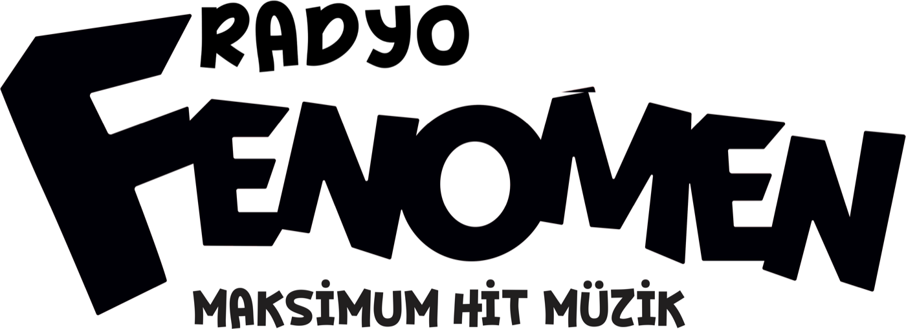

Radyo Fenomen Next, yeni nesil yayıncıları keşfetmek için başlatılan talent programıdır. Başvurular 31 Ekim'e kadar açıktır.
Başvuru formunun doldurulması yaklaşık beş dakika sürmektedir. Profesyonel bir çekim beklenmiyor; telefonla kaydedilmiş 60 saniyelik bir video yeterlidir.
Başvuru formuna git →Kaydınızı siteye yüklemenize gerek yok — WeTransfer, SwissTransfer, SendGB veya Google Drive linki yeterli.
Programın işleyişi, jürisi, takvimi ve kazananlara sunulan imkânlar ayrı başlıklar altında yer almaktadır.
Altı aşamalık süreç, tarihler, değerlendirme kriterleri ve Challenge Day formatı.
Radyo, müzik ve yeni medya dünyasından beş isim; her biri farklı bir başlıkta değerlendirme yapıyor.
Başvuru döneminden ilk yayına kadar bütün tarihler tek sayfada.
Yayın hakkı, eğitim ve mentorluk programı, ekipman desteği ve marka çalışmaları.
18 yaşını dolduran herkes başvurabilir. Başvurular Türkiye'nin her ilinden kabul edilmektedir; İstanbul'da ikamet etme şartı aranmaz.
16–18 yaş aralığındaki adaylar veli onayı ile başvurabilir. Challenge Day'e davet edilen finalistlerin İstanbul ulaşımı ve konaklaması karşılanır.
Hayır. Program, deneyimli yayıncı aramak için değil yeni yetenek keşfetmek için kurgulanmıştır.
Değerlendirmede ses ve anlatım, özgünlük, enerji ve doğaçlama becerisi öne çıkar. Teknik yayıncılık eğitimi, kazanan adaylara program kapsamında verilir.
Takipçi sayısı bir değerlendirme kriteri olarak kullanılmamaktadır.
Değerlendirmede esas alınan başlıklar: ses ve anlatım, özgünlük, enerji, doğaçlama, müzik ve kültür bilgisi, kamera performansı, topluluk oluşturma potansiyeli.
Evet. Profesyonel prodüksiyon beklenmemekte, çekim kalitesi bir eleme kriteri olarak kullanılmamaktadır.
Tek beklenti sesin net duyulmasıdır. Sessiz bir ortamda, telefonu sabit bir yere yaslayarak yapılan bir çekim yeterlidir.
Ses kaydı da kabul edilmektedir.
Bununla birlikte kamera performansı değerlendirme kriterleri arasında yer aldığından, video gönderen adaylar bu başlıkta ayrıca değerlendirilebilmektedir.
Konu serbesttir. Hangi konunun seçildiği de, konunun nasıl kurulduğu kadar değerlendirmenin bir parçasıdır.
Yönlendirmeye ihtiyaç duyulması hâlinde şu başlıklar kullanılabilir: gündemde ilgi çekici bulunan bir konu, bir şarkının neden tekrar tekrar dinlendiği, ya da çevrede sık konuşulan bir tartışma. Süre 60 saniyedir.
Kayıt siteye yüklenmez. Başvuru formundaki kısayollardan WeTransfer, SwissTransfer, SendGB veya Google Drive açılır; kaydınızı oraya yükleyip oluşan linki forma yapıştırırsınız. Her servisin nasıl kullanılacağı formda adım adım anlatılır.
Link gönderilirken paylaşım izninin herkese açık olarak ayarlanması gerekmektedir; erişilemeyen linkler değerlendirmeye alınamamaktadır.
Başvurular 31 Ekim'de kapanır. Ön eleme 1–10 Kasım tarihleri arasında yapılır; sonraki aşamaya geçen adaylarla bu dönemde telefonla iletişime geçilir.
Top 20 listesi 11 Kasım'da açıklanır. Sonuç, olumlu veya olumsuz, tüm adaylara e-posta ile bildirilir.
Dört kazanan, Radyo Fenomen Next'te üç aylık pilot yayın dönemine başlar. Performansa bağlı olarak yayın kalıcı bir program saatine dönüşebilir.
Pilot dönemin yanı sıra yayıncılık eğitimi, mentorluk, profesyonel fotoğraf ve video çekimi, kişisel marka desteği ile içerik üretim ekipmanı sağlanır. Ayrıntılar Ödül sayfasında yer alır.
Her aday için tek başvuru değerlendirmeye alınır.
Eksik veya hatalı gönderim yapılması hâlinde aynı e-posta adresiyle yeniden başvurulabilir; en son gönderilen başvuru geçerli sayılır.